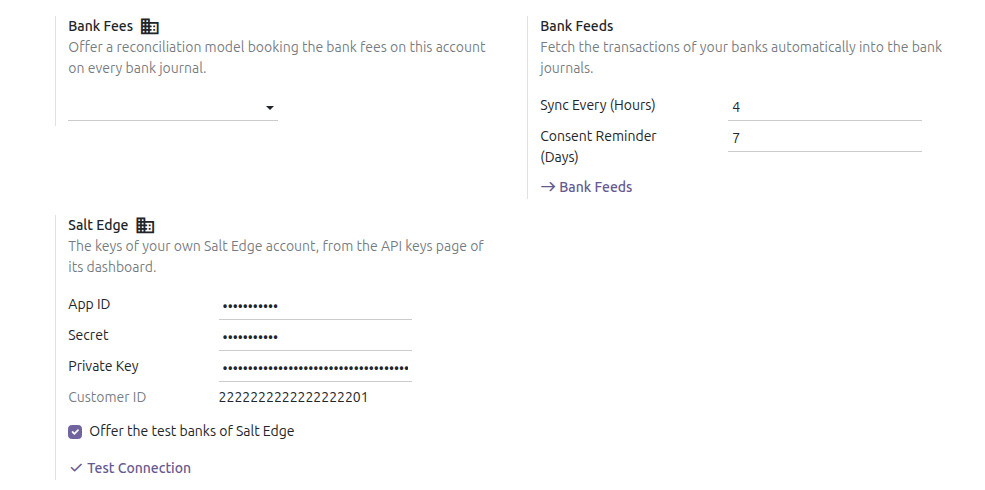
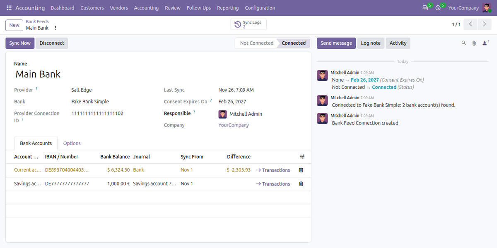
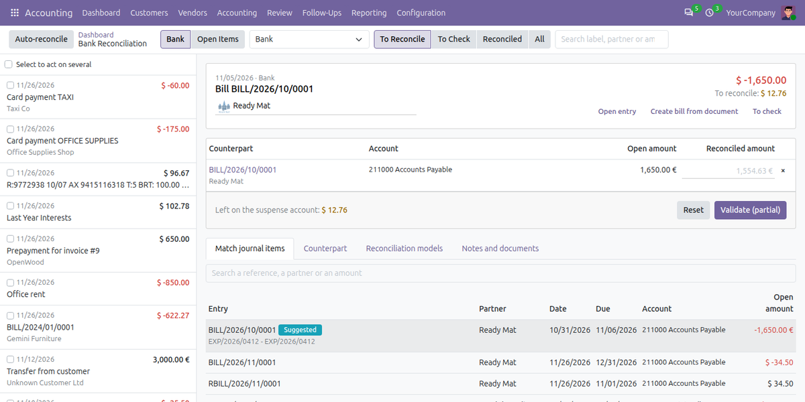

Odoo Mates · free and open source
Bank Feeds: Salt Edge
Thousands of banks through your own Salt Edge account: the consent is given on the Salt Edge page, the accounts are mapped to the bank journals, the transactions arrive by themselves.
Account Information APIOpen bankingConnect and renewBooked and pendingRequest signingTest banksCommunity EditionFree, LGPL-3
A provider of Odoo Mates Bank Feeds.
FreeFree and open source (LGPL-3). You use your own Salt Edge account: your App ID and Secret are entered by you, visible to the administrators only, nothing of ours sits in between.
Overview
Salt Edge in your bank journals
Your Own Account
The App ID, the Secret and the private key of your Salt Edge application, per company.
Connect Session
Connect Bank opens the Salt Edge page to choose the bank and give the consent, then comes back to Odoo.
Accounts and Balances
The accounts of the connection with their IBAN, currency and balance, mapped to the journals.
Transactions
Booked and pending transactions, page after page, from the date you choose, without duplicates.
Consent Expiry
The expiry date of the consent is read from Salt Edge; Renew Consent opens a reconnect session.
Clean Errors
Expired consent, refused keys, too many requests: a clear message on the connection and in the logs.
Request Signing
The requests are signed with your private key, as Salt Edge requires for the applications in Live status.
Test Banks
Offer the fake banks of Salt Edge to try the whole flow before connecting a real bank.
Disconnect
Disconnect removes the connection at Salt Edge; the transactions already imported stay.
Settings
Your Salt Edge keys

✓ App ID, Secret and private key, hidden like passwords.
✓ Test Connection checks the keys.
✓ Test banks on request.
Connection
Connected and mapped

✓ The bank and the consent expiry date from Salt Edge.
✓ Each account mapped to its bank journal.
✓ Sync Now, Renew Consent, Disconnect.
Reconciliation
Ready to reconcile

✓ Standard bank statement lines with partner and label.
✓ The original currency kept on foreign transactions.
✓ Matched with the open invoices and bills.
Setup
Ready in a few minutes
1. Get your keys
Create an application in your Salt Edge account and copy its App ID and Secret from the API keys page.
2. Enter them in Odoo
Accounting, Configuration, Settings, Salt Edge: App ID, Secret, and the private key for the Live status.
3. Connect the bank
On the bank journal, click Connect Bank, choose Salt Edge, and give your consent on the Salt Edge page.
4. Map and sync
Map the accounts to the journals and click Sync Now: the next transactions come every few hours.
Salt Edge is a trademark of its owner. These modules are made by Odoo Mates and are not affiliated with or endorsed by Salt Edge.